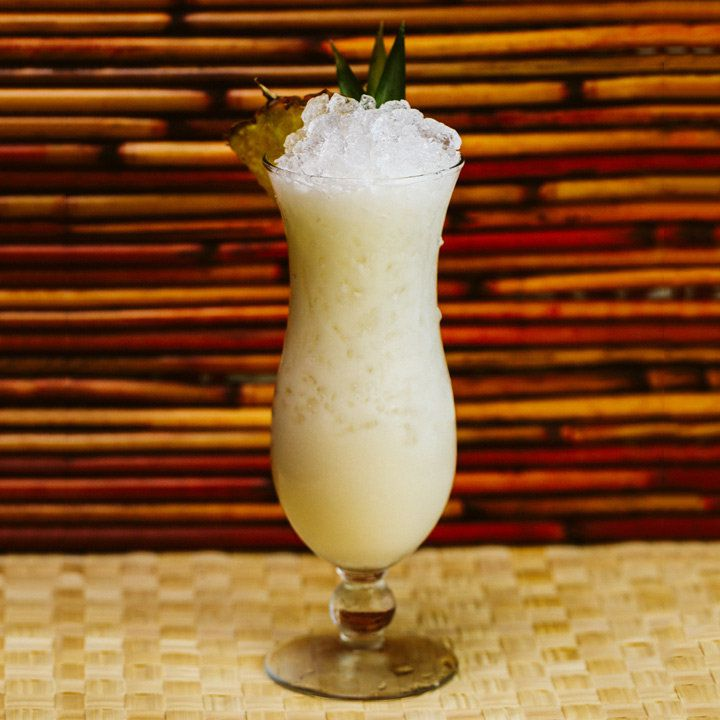

Non-Alcoholic Vegan Pina Colada

Description
This delicious pina colada can be a tasty breakfast treat,
after-school smoothie, or a light dessert! Plus, kids love it!
And, it's way lighter than it looks!
Garnish with a cherry or soy whipped cream.
Ingredients
- 1 cup of sliced fresh pineapple
- 6 tablespoons vanilla soy yogurt
- 1/4 cup vanilla soy milk
- 3 tablespoons cream of coconut
- 3 cubes ice
Directions
- Combine pineapple, yogurt, soy milk, cream of coconut,
and ice in a blender.
- Blend on high for about 2 minutes
- Pour mixture into a cup